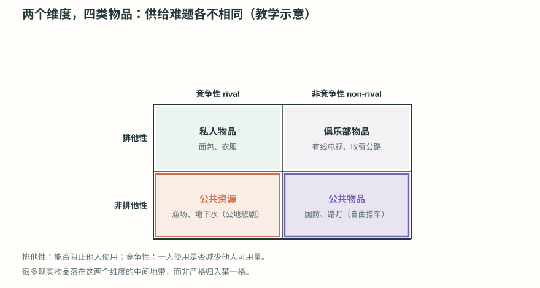
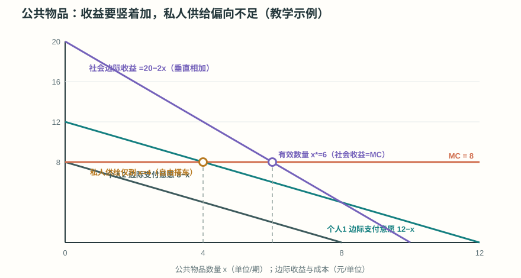

CHAPTER 20 · MICROECONOMICS
公共物品与公共资源：集体行动的困境
有些东西人人受益却没人愿出钱，有些东西人人可用却容易被用尽：用两个维度理清公共物品、公共资源与集体行动难题。
人人受益，却没人愿出钱
路灯、国防、防洪堤：一旦提供，就很难阻止任何人使用，多一个人使用也不减少别人的份额。这类物品私人往往不愿提供，因为搭便车 free ride太容易——别人出钱，我照样受益。
本章用两个维度区分物品，用一个数值例子说明公共物品为何供给不足，再讨论公共资源为何容易被用尽，以及奥斯特罗姆提出的自主治理思路。
排他性与竞争性：四类物品
区分物品的两个关键属性是：排他性 excludability（能否阻止他人使用）与竞争性 rivalry（一人使用是否减少他人可用量）。把两个维度交叉，就得到四类物品：

需要分清：公共物品的难题是供给不足（搭便车），公共资源的难题是过度使用（公地悲剧）。前者是“愿不愿意出钱”，后者是“会不会用过头”。
公共物品：收益要竖着加
因为公共物品被共同消费，社会对它的边际收益是所有人支付意愿的相加——这就是与私人物品不同的“垂直加总”。私人物品的市场需求是横向相加（不同人消费不同单位），公共物品则是纵向相加（同单位被所有人共享）。
教学示例：两个人对公共物品数量的边际支付意愿分别为 12−x 与 8−x。社会边际收益是两者之和：
但私人各自决策只看自己的收益：第一个人最多愿供到 12−x=8，即 x=4；第二个人几乎不愿供（8−x=8 时 x=0）。于是私人供给只到 4，低于有效的 6，缺口 2 单位正是自由搭车导致的供给不足。

公地悲剧与自主治理
公共资源 common-pool resource不排他但竞争：渔场、地下水、公共牧场。每个人多捕一条鱼的收益归自己，成本却由大家分担，于是使用量超过社会最优——这就是公地悲剧 tragedy of the commons。它与负外部性同源。
解决方案并不只有“私有化”或“政府管制”。奥斯特罗姆（Elinor Ostrom）通过大量实地研究发现，资源使用者常常能自主制定规则实现可持续治理：明确边界、按比例分担、分级制裁、冲突解决机制与监督。她因这项工作获得 2009 年诺贝尔经济学奖。
这提醒我们：公共资源治理的关键在于规则设计，而不是简单地在“市场”与“国家”之间二选一。
交互实验：边际成本与供给不足
自由搭车造成的缺口
沿用两个需求者：边际支付意愿为 12−x 与 8−x，社会边际收益为 20−2x。拖动滑块改变边际成本 MC，比较有效数量与私人实际供给。
边际成本 MC=8：有效数量 x*=6，私人供给 x=4，缺口=2。私人供给低于有效水平，存在自由搭车导致的供给不足。
有效数量 =(20−MC)/2，私人供给 =max(0, 12−MC)；仅在 MC≥4 时两者可比。数值均为教学示例。
如果两个需求者能签订有约束力的成本分摊协议，缺口会消失吗？
查看答案
会。当两人按各自边际收益共同出资时，总出资意愿与社会边际收益一致，供给可达到 x*=6。自由搭车的根源是缺乏可执行的成本分摊协议，这也解释了为何公共物品常需要税收或集体行动来提供。
引用文献与适用范围
本章的方程与数值（边际支付意愿 12−x 与 8−x、MC=8、有效数量 6）均为教学示例，不是观测数据；公共物品、公共资源与奥斯特罗姆的概念参考以下教材：
- OpenStax · Principles of Microeconomics 3e, Ch. 13: Positive Externalities and Public Goods
- OpenStax · Principles of Microeconomics 3e（教材首页）
奥斯特罗姆的自主治理原则为概念概述，未引用具体田野案例的数据；公共物品与公共资源的四类划分是理想类型，现实物品常落在中间地带。